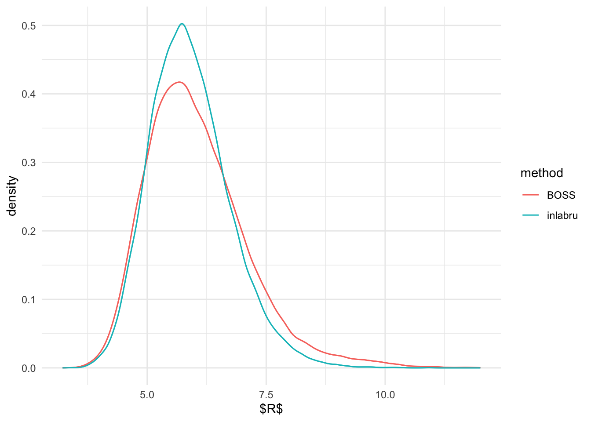
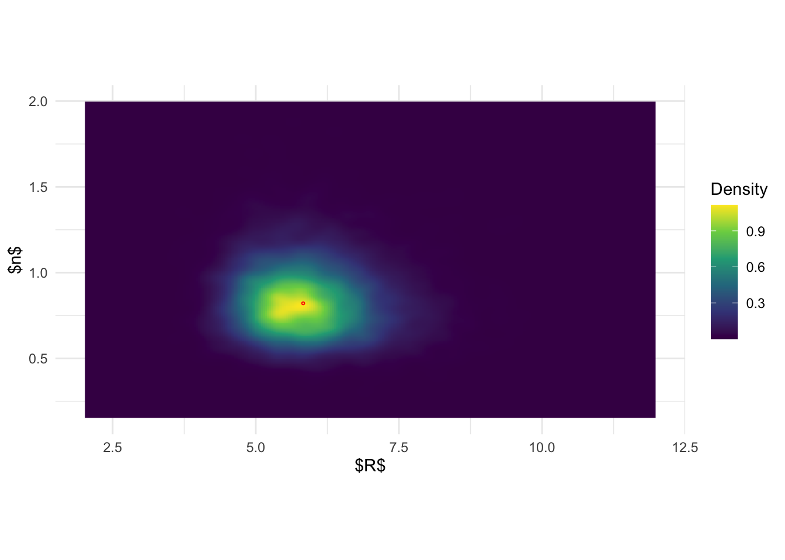
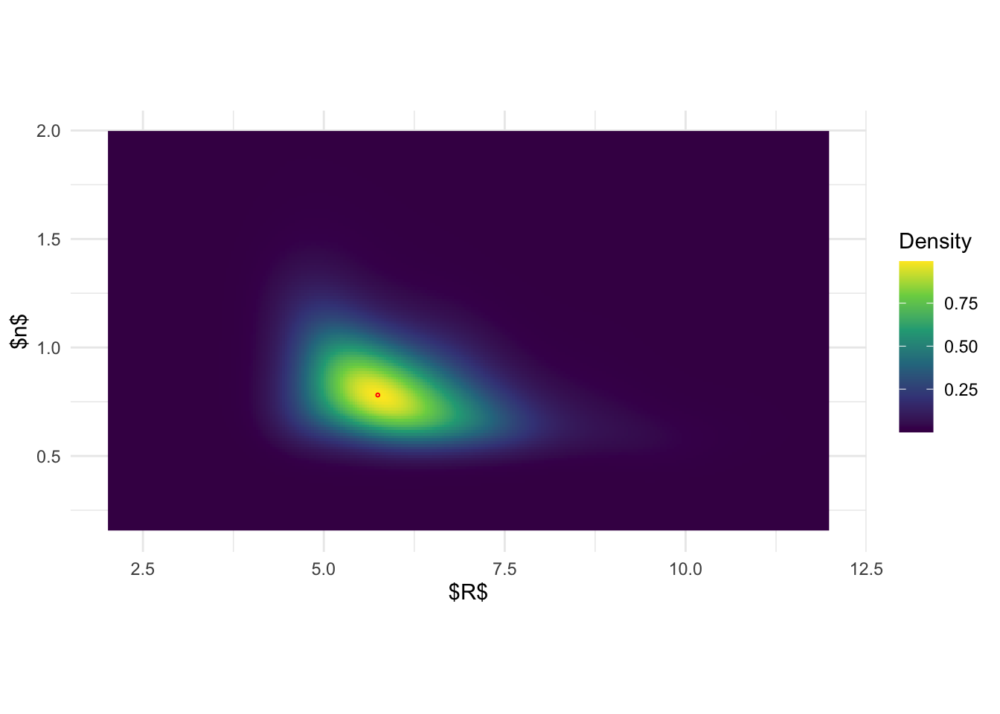
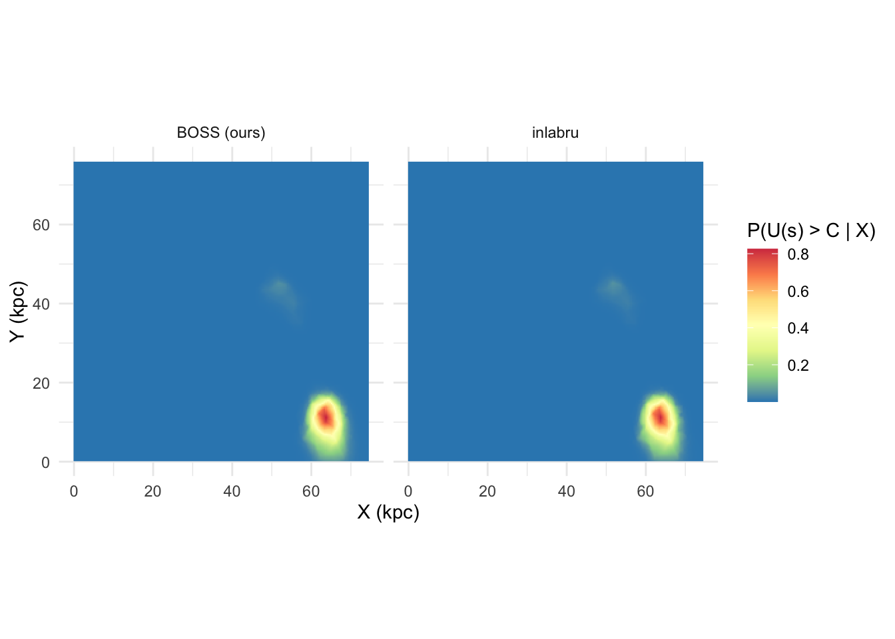

Last updated: 2025-05-07
Checks: 7 0
Knit directory: BOSS_website/
This reproducible R Markdown analysis was created with workflowr (version 1.7.1). The Checks tab describes the reproducibility checks that were applied when the results were created. The Past versions tab lists the development history.
Great! Since the R Markdown file has been committed to the Git repository, you know the exact version of the code that produced these results.
Great job! The global environment was empty. Objects defined in the global environment can affect the analysis in your R Markdown file in unknown ways. For reproduciblity it’s best to always run the code in an empty environment.
The command set.seed(20250415) was run prior to running
the code in the R Markdown file. Setting a seed ensures that any results
that rely on randomness, e.g. subsampling or permutations, are
reproducible.
Great job! Recording the operating system, R version, and package versions is critical for reproducibility.
Nice! There were no cached chunks for this analysis, so you can be confident that you successfully produced the results during this run.
Great job! Using relative paths to the files within your workflowr project makes it easier to run your code on other machines.
Great! You are using Git for version control. Tracking code development and connecting the code version to the results is critical for reproducibility.
The results in this page were generated with repository version 2acb582. See the Past versions tab to see a history of the changes made to the R Markdown and HTML files.
Note that you need to be careful to ensure that all relevant files for
the analysis have been committed to Git prior to generating the results
(you can use wflow_publish or
wflow_git_commit). workflowr only checks the R Markdown
file, but you know if there are other scripts or data files that it
depends on. Below is the status of the Git repository when the results
were generated:
Ignored files:
Ignored: .DS_Store
Ignored: .Rhistory
Ignored: .Rproj.user/
Ignored: analysis/.DS_Store
Ignored: analysis/figure/
Ignored: data/.DS_Store
Ignored: data/dimension/
Ignored: data/sim3/
Ignored: output/.DS_Store
Unstaged changes:
Modified: output/UDG/UDG_inlabru.rda
Note that any generated files, e.g. HTML, png, CSS, etc., are not included in this status report because it is ok for generated content to have uncommitted changes.
These are the previous versions of the repository in which changes were
made to the R Markdown (analysis/UDG.Rmd) and HTML
(docs/UDG.html) files. If you’ve configured a remote Git
repository (see ?wflow_git_remote), click on the hyperlinks
in the table below to view the files as they were in that past version.
| File | Version | Author | Date | Message |
|---|---|---|---|---|
| Rmd | 2acb582 | david.li | 2025-05-07 | wflow_publish("analysis/UDG.Rmd") |
| html | 183657b | david.li | 2025-05-07 | Build site. |
| html | 149a0b3 | david.li | 2025-05-07 | Build site. |
| Rmd | 2fecbea | david.li | 2025-05-07 | wflow_publish("analysis/UDG.Rmd") |
| Rmd | 28db27f | david.li | 2025-04-30 | Update dimension analysis. |
| html | f5fd224 | david.li | 2025-04-23 | Build site. |
| Rmd | c944a81 | david.li | 2025-04-23 | wflow_publish("analysis/UDG.Rmd") |
| html | 380a530 | david.li | 2025-04-21 | Build site. |
| Rmd | 2a070ce | david.li | 2025-04-21 | wflow_publish("analysis/UDG.Rmd") |
library(tidyverse)
library(spatial)
library(raster)
library(zoo)
library(spatstat)
library(excursions)
library(INLA)
library(inlabru)
library(spatialEco)
library(RColorBrewer)
library(R.utils)
library(doParallel)
library(foreach)
library(tikzDevice)
library(aghq)
library(coda)
function_path <- "./code"
output_path <- "./output/UDG"
data_path <- "./data/UDG"
source(paste0(function_path, "/00_BOSS.R"))We first load the point pattern data we will model, and construct the necessary covariates for modeling.
# read in data
v_acs <- read_csv(paste0(data_path,'/v10acs_GC.csv'))
# specify study regions
X <- c(1, 4095, 4210, 220)/4300*76
Y <- c(1, 100.5, 4300, 4042)/4300*76
region <- Polygon(cbind(X,Y))
region <- SpatialPolygons(list(Polygons(list(region),'region')))
region <- SpatialPolygonsDataFrame(region, data.frame(id = region@polygons[[1]]@ID, row.names = region@polygons[[1]]@ID))
plot(region)
points(v_acs[,3:4]/4300*76)
# Construct Spatial covariate that captures GC intensity in a bright normal galaxy
grid <- makegrid(region, n = 20000)
grid <- SpatialPoints(grid, proj4string = CRS(proj4string(region)))
grid <- crop(grid, region)
gal1 <- as.data.frame(grid)
names(gal1) <- c('x', 'y')
gal1$z <- (gal1$x - 3278/4300*76)^2/1.4^2 + (gal1$y - 4073/4300*76)^2
coordinates(gal1) <- ~x+y
gridded(gal1) <- T
# construct non-linear functional for covariate
f.gal1 <- function(x, y) {
spp <- SpatialPoints(data.frame(x = x, y = y), proj4string = fm_sp_get_crs(gal1))
proj4string(spp) <- fm_sp_get_crs(gal1)
v <- over(spp, gal1)
if (any(is.na(v$z))) {
v$z <- inlabru:::bru_fill_missing(gal1, spp, v$z)
}
return(v$z)
}inlabruspv <- SpatialPoints(v_acs[,3:4]/4300*76)
# construct mesh for INLA-SPDE
v_mesh <- inla.mesh.2d(loc = spv, boundary = region,
max.edge = c(80, 800)/4300*76, cutoff = 40/4300*76, max.n.strict = 1300L)
v_spde <- inla.spde2.pcmatern(mesh = v_mesh, alpha = 2,
prior.range = c(400/4300*76, 0.5),
prior.sigma = c(1.5, 0.5))
# prior
alpha_fun_1 <- function(u){
qlnorm(pnorm(u), meanlog = 0, sdlog = 0.3)
}
R_fun_1 <- function(u){
qlnorm(pnorm(u), meanlog = 6.36 - log(4300) + log(76), sdlog = 0.25)
}
# model components
cmp <- coordinates ~ gal1(f.gal1(x,y), model = "offset") +
beta1(1, model = 'linear') +
R_internal_1(1, model = 'linear', mean.linear = 0, prec.linear = 1) +
alpha_internal_1(1, model="linear", mean.linear=0, prec.linear=1) +
field(coordinates, model = v_spde) + Intercept(1)
# model formula
form <- coordinates ~ Intercept + beta1*exp(-(gal1/R_fun_1(R_internal_1)^2)^alpha_fun_1(alpha_internal_1)) + field
spv <- SpatialPointsDataFrame(spv, data = data.frame(id = 1:nrow(as.data.frame(spv))))
# fit model via inlabru
fit <- lgcp(components = cmp, data = spv,
samplers = region, domain = list(coordinates = v_mesh),
formula = form, options = list(control.inla=list(int.strategy="grid")))
save(fit, file = paste0(output_path, "/UDG_inlabru.rda"))# specify objective function: unnormalized pi(R,n|y)
eval_func <- function(par){
R1 <- par[1]
a1 <- par[2]
cmp <- coordinates ~ gal1(f.gal1(x,y), model = "offset") +
beta1(1, model = 'linear') +
field(coordinates, model = v_spde) + Intercept(1)
form <- coordinates ~ Intercept + beta1*exp(-(gal1/R1^2)^(a1)) + field
fit_inner <- lgcp(components = cmp, data = spv,
samplers = region, domain = list(coordinates = v_mesh),
formula = form, options = list(control.inla=list(int.strategy="grid")))
unname(fit_inner$mlik[1,]) + dlnorm(R1, 6.36 - log(4300) + log(76), 0.25, log = T) +
dlnorm(a1, 0, 0.3, log = T)
}lower = c(2, 0.15)
upper = c(12, 4)
res_opt <- BOSS(eval_func, criterion = 'modal', update_step = 5, max_iter = 100, D = 2,
lower = lower, upper = upper,
noise_var = 1e-6,
modal_iter_check = 1, modal_check_warmup = 20, modal_k.nn = 5,
modal_eps = 0.01,
initial_design = 5, delta = 0.01^2,
optim.n = 1, optim.max.iter = 100)
save(res_opt, file = paste0(output_path, "/UDG_BOSS.rda"))The above BOSS algorithm converged in \(60\) iterations.
load(paste0(output_path, "/UDG_inlabru.rda"))
set.seed(1234)
inla.samples.a <- R_fun_1(inla.rmarginal(49500, fit$marginals.fixed$R_internal_1))
inla.samples.b <- alpha_fun_1(inla.rmarginal(49500, fit$marginals.fixed$alpha_internal_1))
load(paste0(output_path, "/UDG_BOSS.rda"))
# construct covariance function for GP regression
data_to_smooth <- list()
unique_data <- unique(data.frame(x = res_opt$result$x, y = res_opt$result$y))
data_to_smooth$x <- as.matrix(dplyr::select(unique_data, -y))
data_to_smooth$y <- (unique_data$y - mean(unique_data$y))
square_exp_cov <- square_exp_cov_generator_nd(length_scale = res_opt$length_scale, signal_var = res_opt$signal_var)
surrogate <- function(xvalue, data_to_smooth, cov){
predict_gp(data_to_smooth, x_pred = xvalue, choice_cov = cov, noise_var = 1e-6)$mean
}
# grid method to normalize posterior density for plotting joint posterior of (R, n)
ff <- list()
ff$fn <- function(x) as.numeric(surrogate(matrix(x, nrow = 1), data_to_smooth, square_exp_cov))
x.1 <- (seq(from = 2, to = 12, length.out = 300) - 2)/10
x.2 <- (seq(from = 0.15, to = 4, length.out = 300) - 0.15)/3.85
x_vals <- expand.grid(x.1, x.2)
names(x_vals) <- c('x.1','x.2')
x_original <- t(t(x_vals)*(c(12, 4) - c(2, 0.15)) + c(2, 0.15))
fn_vals <- apply(x_vals, 1, function(x) ff$fn(matrix(x, ncol = 2)))
# normalize
lognormal_const <- log(sum(exp(fn_vals))*0.02*0.0077*25/9)
post_x <- data.frame(x_original, pos = exp(fn_vals - lognormal_const))
# get posterior samples of (R, n) from BOSS
dx <- unique(post_x$x.1)[2] - unique(post_x$x.1)[1]
dy <- unique(post_x$x.2)[2] - unique(post_x$x.2)[1]
set.seed(123456)
sample_idx <- rmultinom(1:250000, size = 49500, prob = post_x$pos)
sample_x <- data.frame(post_x, n = sample_idx)
samples <- data.frame(do.call(rbind, apply(sample_x, 1, function(x) cbind(runif(x[4], x[1], x[1]+dx), runif(x[4], x[2], x[2] + dy)))))# marginal of R
R_marginal <- data.frame(R = c(inla.samples.a, samples[,1]),
method = rep(c('inlabru', 'BOSS'), c(length(inla.samples.a), length(samples[,1]))))
# plot marginal of R
#tikz(file = "R_marginal_UDG.tex", standAlone=T, width = 4, height = 2)
ggplot(R_marginal, aes(R)) + geom_density(aes(color = method), show_guide = F) +
stat_density(aes(x = R, colour = method),
geom="line",position="identity") + theme_minimal() + xlab('$R$')Warning: The `show_guide` argument of `layer()` is deprecated as of ggplot2 2.0.0.
ℹ Please use the `show.legend` argument instead.
This warning is displayed once every 8 hours.
Call `lifecycle::last_lifecycle_warnings()` to see where this warning was
generated.
#dev.off()
#system('pdflatex R_marginal_UDG.tex')# marginal of n
n_marginal <- data.frame(n = c(inla.samples.b, samples[,2]),
method = rep(c('inlabru', 'BOSS'), c(length(inla.samples.b), length(samples[,2]))))
# plot marginal of n
#tikz(file = "n_marginal_UDG.tex", standAlone=T, width = 4, height = 2)
ggplot(n_marginal, aes(n)) + geom_density(aes(color = method), show_guide = F) +
stat_density(aes(x = n, colour = method),
geom="line",position="identity") + theme_minimal() + xlab('$n$')
#system('pdflatex n_marginal_UDG.tex')From the above, it seems like the marginal distribution of \(R\) and \(\beta\) are pretty similar from
inlabru and BOSS. Although, marginal posterior of \(R\) seems to be slightly more heavier
tailed than that of inlabru.
inlabru# get joint posterior sample of (R, n) from inlabru
joint_samp <- inla.posterior.sample(10000, fit, selection = list(R_internal_1 = 1, alpha_internal_1 = 1), seed = 12345)
joint_samp <- do.call('rbind', lapply(joint_samp, function(x) matrix(x$latent, ncol = 2)))
inla.joint.samps <- data.frame(R = R_fun_1(joint_samp[,1]), n = alpha_fun_1(joint_samp[,2]))
# plot joint posterior density of (R,n) from inlabru
#tikz(file = "joint_post_R_n_inlabru.tex", standAlone=T, width = 5, height = 2)
ggplot(inla.joint.samps, aes(R, n)) + stat_density_2d(
geom = "raster",
aes(fill = after_stat(density)), n = 300,
contour = FALSE) +
geom_point(data = data.frame(R = R_fun_1(fit$summary.fixed$mode[2]), n = alpha_fun_1(fit$summary.fixed$mode[3])), color = 'red', shape = 1, size =0.5) + scale_fill_viridis_c(name = 'Density') + theme_minimal() + xlab('$R$') + ylab('$n$') + xlim(c(2, 12)) + ylim(c(0, 2))
#dev.off()
#system('pdflatex joint_post_R_n_inlabru.tex')# plot joint posterior of (R, n)
#tikz(file = "joint_post_R_n.tex", standAlone=T, width = 5, height = 2)
ggplot(post_x, aes(x.1,x.2)) + geom_raster(aes(fill = pos)) +
geom_point(data = data.frame(x.1 = post_x$x.1[which.max(post_x$pos)], x.2 = post_x$x.2[which.max(post_x$pos)]), color = 'red', shape = 1, size =0.5) +
scale_fill_viridis_c(name = 'Density') + theme_minimal() + xlab('$R$') + ylab('$n$') +
xlim(c(2,12)) + ylim(c(0, 2))
#dev.off()
#system('pdflatex joint_post_R_n.tex')Based on the previous figures, the pictures seem to be more clear:
joint posterior of \((R, n)\) based on
inlabru is again a simple product of the marginal. On the
other hand, the results from BOSS indicate that there is in fact a
pretty strong correlation structure between \(R\) and \(n\).
inlabru# posterior distribution of spatial random field U through inlabru
U <- predict(fit, fm_pixels(v_mesh, dim = c(300,300), mask = region, format = 'sp'), ~ exp(field), seed = 1234)
set.seed(1108)
sigma <- inla.hyperpar.sample(500000, fit)[,2]
Q <- rnorm(500000, 0, sigma)
q <- quantile(Q, 0.9)
# get exceedance probability through inlabru
exc_q <- excursions.inla(fit, u = q, type = '>', name = 'field', F.limit = 0.6)No method selected, using QCsets_q <- continuous(exc_q, v_mesh, 0.05)
proj_q <- inla.mesh.projector(sets_q$F.geometry, dims = c(300, 300))
dat_q <- list()
dat_q$x <- proj_q$x
dat_q$y <- proj_q$y
dat_q$z <- inla.mesh.project(proj_q, field = sets_q$`F`)
r_q <- raster(dat_q)
r_q <- as(r_q, 'SpatialPixelsDataFrame')
r_q <- crop(r_q, region)
r_q <- as.data.frame(r_q)
r_q <- r_q %>%
mutate(prob = layer) %>%
dplyr::select(-layer)# get posterior of U through BOSS via AGHQ
ff <- list(fn = function(x) {as.numeric(surrogate(matrix(pnorm(x), nrow = 1), data_to_smooth, square_exp_cov)) + sum(dnorm(x, log = TRUE))})
ff$gr = function(x) numDeriv::grad(func = ff$fn, x)
ff$he = function(x) numDeriv::hessian(func = ff$fn, x)
aghq_result = aghq::aghq(ff = ff,
startingvalue = as.numeric(unique_data[which.max(unique_data$y), c(1,2)]),
k = 4)
#optresults = )
###
quad = aghq_result$normalized_posterior$nodesandweights
prob = exp(aghq_result$normalized_posterior$nodesandweights$logpost_normalized) * aghq_result$normalized_posterior$nodesandweights$weights
sampled_freq <- rmultinom(n = 1, size = 49500, prob = prob)
sampled_theta1 = pnorm(quad$theta1) * 10 + 2
sampled_theta2 = pnorm(quad$theta2) * 3.85 + 0.15
sample_theta <- data.frame(R = sampled_theta1, n = sampled_theta2, count = sampled_freq, prob = prob)# compute posterior of U given (R,n)
get_post_U <- function(st){
R1 <- st[1,'R']
a1 <- st[1,'n']
cmp <- coordinates ~ gal1(f.gal1(x,y), model = "offset") +
beta1(1, model = 'linear') +
field(coordinates, model = v_spde) + Intercept(1)
form <- coordinates ~ Intercept + beta1*exp(-(gal1/R1^2)^(a1)) + field
fit_inner <- lgcp(components = cmp, data = spv,
samplers = region, domain = list(coordinates = v_mesh),
formula = form, options = list(control.inla=list(int.strategy="grid")))
U <- predict(fit, fm_pixels(v_mesh, dim = c(300,300), mask = region, format = 'sp'), ~ exp(field), seed = 1234)
U1 <- as.data.frame(U)
set.seed(1108)
sigma <- inla.hyperpar.sample(500000, fit_inner)[,2]
Q <- rnorm(500000, 0, sigma)
q <- quantile(Q, 0.9)
exc_0.5 <- excursions.inla(fit_inner, u = q, type = '>', name = 'field', F.limit = 0.6)
sets_0.5 <- continuous(exc_0.5, v_mesh, 0.05)
proj_0.5 <- inla.mesh.projector(sets_0.5$F.geometry, dims = c(300, 300))
dat_0.5 <- list()
dat_0.5$x <- proj_0.5$x
dat_0.5$y <- proj_0.5$y
dat_0.5$z <- inla.mesh.project(proj_0.5, field = sets_0.5$`F`)
r_0.5 <- raster(dat_0.5)
r_0.5 <- as(r_0.5, 'SpatialPixelsDataFrame')
r_0.5 <- crop(r_0.5, region)
r_0.5 <- as.data.frame(r_0.5)
r_0.5 <- r_0.5 %>%
mutate(prob = layer) %>%
dplyr::select(-layer)
int <- inla.rmarginal(st[1,'count'], fit_inner$marginals.fixed$Intercept)
b1 <- inla.rmarginal(st[1,'count'], fit_inner$marginals.fixed$beta1)
sigma <- inla.hyperpar.sample(st[1,'count'], fit_inner)[,2]
rho <- inla.hyperpar.sample(st[1,'count'], fit_inner)[,1]
return(list(exc = r_0.5, int = int, b1 = b1, rho = rho, sigma = sigma, U = U1[c('coords.x1', 'coords.x2', 'median')]))
}
BO_aghq_int <- list()
# integrate out (R,n) to get posterior of U through BOSS and AGHQ
for(i in 1:16){
BO_aghq_int[[i]] <- get_post_U(st = sample_theta[i,])
}
save(BO_aghq_int, file = paste0(output_path, "/UDG_BOSS_AGHQ.rda"))load(paste0(output_path, "/UDG_BOSS_AGHQ.rda"))
# get exceedance probability through BOSS
mean_exceed_0.5 <- data.frame(BO_aghq_int[[1]][[1]][,c('x','y')])
prob_0.5 <- lapply(lapply(BO_aghq_int, function(x) x$exc), function(y) y$prob)
prob_0.5 <- do.call('rbind', prob_0.5)
prob_0.5 <- colSums(prob_0.5*sample_theta$prob)
mean_exceed_0.5$prob <- prob_0.5
exceed_map <- bind_rows(r_q, mean_exceed_0.5)
exceed_map$method <- rep(c('inlabru', 'BOSS (ours)'), each = 44100)# plot the exceedance probability
#options(tikzLatexPackages
# =c(getOption( "tikzLatexPackages" ),"\\usepackage{amsfonts}"))
#tikz(file = "exceed_Us_compare.tex", standAlone=T, width = 6, height = 3)
ggplot(exceed_map, aes(x,y)) + geom_raster(aes(fill = prob)) +
scale_fill_distiller(palette = 'Spectral', name = 'P(U(s) > C | X)') +
coord_fixed() + facet_wrap(.~method) +
xlab('X (kpc)') + ylab('Y (kpc)') + theme_minimal()
#dev.off()
#system('pdflatex exceed_Us_compare.tex')# comparison of median of the posterior of U (inlabru vs BOSS)
U_0.5 <- data.frame(BO_aghq_int[[1]]$U[,c('coords.x1','coords.x2', 'median')])
U_med <- lapply(lapply(BO_aghq_int, function(x) x$U), function(y) y$median)
U_med <- do.call('rbind', U_med)
U_med <- colSums(U_med*sample_theta$prob)
U1 <- as.data.frame(U)
U_dat <- bind_rows(U_0.5, U1[c('coords.x1', 'coords.x2', 'median')])
U_dat$method <- rep(c('BOSS (ours)', 'inlabru'), each = 82132)
theBreaks <- c(0, 0.5, 1, 1.5, 2, 3, 4, 5, 6, 7)
theCol = rev(RColorBrewer::brewer.pal(length(theBreaks)-1, 'Spectral'))
# plot it
#tikz(file = "post_med_exp_Us_compare.tex", standAlone=T, width = 5, height = 3)
ggplot(U_dat, aes(coords.x1, coords.x2)) +
geom_contour_filled(aes(z = median), breaks = theBreaks) +
scale_fill_manual(values = theCol, name = 'exp(U(s))', guide = guide_legend(reverse = T)) +
coord_fixed() + facet_wrap(.~method) +
xlab('X (kpc)') + ylab('Y (kpc)') +
theme_minimal() +
theme(legend.text = element_text(size = 7),
legend.title = element_text(size = 8),
strip.background = element_rect(color = NULL, fill = 'white', linetype = 'blank'))
#dev.off()
#system('pdflatex post_med_exp_Us_compare.tex')The final results in terms of the UDG detection is quite similar
between inlabru and BOSS.
sessionInfo()R version 4.4.1 (2024-06-14)
Platform: aarch64-apple-darwin20
Running under: macOS 15.0
Matrix products: default
BLAS: /Library/Frameworks/R.framework/Versions/4.4-arm64/Resources/lib/libRblas.0.dylib
LAPACK: /Library/Frameworks/R.framework/Versions/4.4-arm64/Resources/lib/libRlapack.dylib; LAPACK version 3.12.0
locale:
[1] en_US.UTF-8/en_US.UTF-8/en_US.UTF-8/C/en_US.UTF-8/en_US.UTF-8
time zone: America/Toronto
tzcode source: internal
attached base packages:
[1] parallel stats graphics grDevices utils datasets methods
[8] base
other attached packages:
[1] coda_0.19-4.1 aghq_0.4.1 tikzDevice_0.12.6
[4] doParallel_1.0.17 iterators_1.0.14 foreach_1.5.2
[7] R.utils_2.12.3 R.oo_1.27.0 R.methodsS3_1.8.2
[10] RColorBrewer_1.1-3 spatialEco_2.0-2 inlabru_2.11.1
[13] fmesher_0.1.7 INLA_24.06.27 excursions_2.5.8
[16] Matrix_1.7-0 spatstat_3.2-1 spatstat.linnet_3.2-2
[19] spatstat.model_3.3-2 rpart_4.1.23 spatstat.explore_3.3-2
[22] nlme_3.1-164 spatstat.random_3.3-2 spatstat.geom_3.3-3
[25] spatstat.univar_3.0-1 spatstat.data_3.1-2 zoo_1.8-12
[28] raster_3.6-30 sp_2.1-4 spatial_7.3-17
[31] lubridate_1.9.3 forcats_1.0.0 stringr_1.5.1
[34] dplyr_1.1.4 purrr_1.0.2 readr_2.1.5
[37] tidyr_1.3.1 tibble_3.2.1 ggplot2_3.5.1
[40] tidyverse_2.0.0 workflowr_1.7.1
loaded via a namespace (and not attached):
[1] rstudioapi_0.16.0 jsonlite_1.8.9 magrittr_2.0.3
[4] spatstat.utils_3.1-0 farver_2.1.2 rmarkdown_2.28
[7] fs_1.6.4 vctrs_0.6.5 terra_1.7-78
[10] htmltools_0.5.8.1 sass_0.4.9 KernSmooth_2.23-24
[13] bslib_0.8.0 plyr_1.8.9 cachem_1.1.0
[16] whisker_0.4.1 lifecycle_1.0.4 pkgconfig_2.0.3
[19] R6_2.5.1 fastmap_1.2.0 digest_0.6.37
[22] numDeriv_2016.8-1.1 colorspace_2.1-1 ps_1.8.0
[25] rprojroot_2.0.4 tensor_1.5 labeling_0.4.3
[28] fansi_1.0.6 spatstat.sparse_3.1-0 timechange_0.3.0
[31] httr_1.4.7 polyclip_1.10-7 abind_1.4-8
[34] mgcv_1.9-1 compiler_4.4.1 proxy_0.4-27
[37] bit64_4.5.2 withr_3.0.1 DBI_1.2.3
[40] highr_0.11 MASS_7.3-61 classInt_0.4-10
[43] tools_4.4.1 units_0.8-5 filehash_2.4-6
[46] httpuv_1.6.15 goftest_1.2-3 glue_1.7.0
[49] callr_3.7.6 promises_1.3.0 grid_4.4.1
[52] sf_1.0-19 getPass_0.2-4 generics_0.1.3
[55] isoband_0.2.7 gtable_0.3.5 tzdb_0.4.0
[58] class_7.3-22 sn_2.1.1 data.table_1.16.0
[61] hms_1.1.3 utf8_1.2.4 pillar_1.9.0
[64] vroom_1.6.5 later_1.3.2 splines_4.4.1
[67] lattice_0.22-6 bit_4.5.0 deldir_2.0-4
[70] tidyselect_1.2.1 knitr_1.48 git2r_0.33.0
[73] stats4_4.4.1 xfun_0.47 statmod_1.5.0
[76] mvQuad_1.0-8 stringi_1.8.4 yaml_2.3.10
[79] evaluate_1.0.0 codetools_0.2-20 cli_3.6.3
[82] munsell_0.5.1 processx_3.8.4 jquerylib_0.1.4
[85] Rcpp_1.0.13 MatrixModels_0.5-3 viridisLite_0.4.2
[88] scales_1.3.0 e1071_1.7-16 crayon_1.5.3
[91] rlang_1.1.4 mnormt_2.1.1